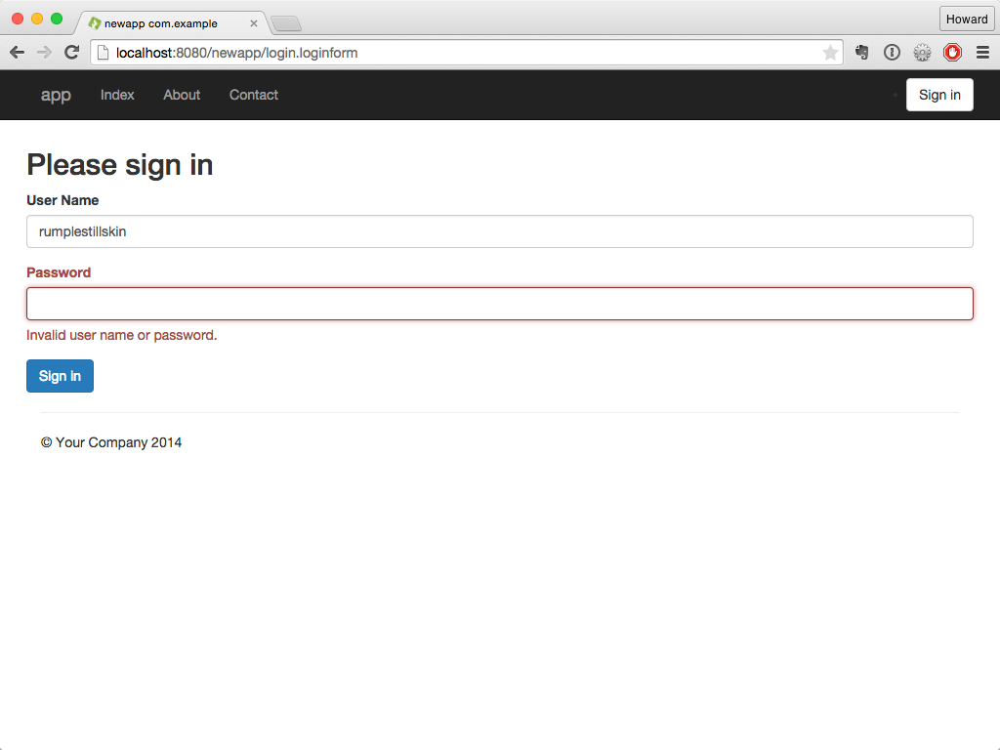

Forms and Validation
Forms are the traditional way for most web applications to gather significant information from the user. Whether it’s a search form, a login screen or a multi-page registration wizard, Tapestry uses standard HTML forms, with HTTP POST actions by default. In addition, AJAX-based form submission is supported using Zones.
Tapestry provides support for creating and rendering forms, populating their fields, and validating user input. For simple cases, input validation is declarative, meaning you simply tell Tapestry what validations to apply to a given field, and it takes care of it on the server and (optionally) on the client as well. In addition, you can provide event handler methods in your page or component classes to handle more complex validation scenarios.
Finally, Tapestry not only makes it easy to present errors messages to the user, but it can also automatically highlight form fields when validation fails.
The Form Component
The core of Tapestry’s form support is the Form component.
The Form component encloses (wraps around) all the other field components such as TextField, TextArea, Checkbox, etc.
Form Events
The Form component emits a number of Component Events.
You’ll want to provide event handler methods for some of these.
When rendering, the Form component emits two events: first, prepareForRender, then prepare.
These allow the Form's container to set up any fields or properties that will be referenced in the form.
For example, this is a good place to create a temporary entity object to be rendered, or to load an entity from a database to be edited.
When user submits the form on the client, a series of steps occur on the server.
First, the Form emits a prepareForSubmit event, then a prepare event.
These allow the container to ensure that objects are set up and ready to receive information from the form submission.
Next, all the fields inside the form are activated to pull values out of the incoming request, validate them and (if valid) store the changes.
After the fields have done their processing, the Form emits a validate event.
This is your chance to perform any cross-form validation that can’t be described declaratively.
Next, the Form determines if there have been any validation errors.
If there have been, then the submission is considered a failure, and a failure event is emitted.
If there have been no validation errors, then a success event is emitted.
Finally, the Form emits a submit event, for logic that doesn’t care about success or failure.
| Form Event (in order) | Phase | When emitted (and typical use) | Method Name | @OnEvent Constant |
|---|---|---|---|---|
|
Render |
Before rendering the form (e.g. load an entity from a database to be edited) |
|
|
|
Render |
Before rendering the form, but after |
|
|
|
Submit |
Before the submitted form is processed. |
|
|
|
Submit |
Before the submitted form is processed, but after |
|
|
|
Submit |
After fields have been populated from submitted values and validated (e.g. perform cross-field validation). |
|
|
|
Submit |
same as validate (deprecated – do not use) |
|
|
|
Submit |
After one or more validation errors have occurred |
|
|
|
Submit |
When validation has completed without any errors (e.g. save changes to the database). |
|
|
|
Submit |
After all validation (success or failure) has finished. |
|
|
|
Submit |
Whenever a |
|
Note that the prepare event is emitted during both form rendering and form submission.
Handling Events
Main article: Component Events
You handle events by providing methods in your page or component class, either following the onEventFromComponent() naming convention or using the @OnEvent annotation.
For example:
void onValidateFromPassword() { ... }or the equivalent using @OnEvent:
@OnEvent(value=EventConstants.VALIDATE, component="password")
void verifyThePassword() { ... }Tracking Validation Errors
Associated with the Form is a ValidationTracker that tracks all the provided user input and validation errors for every field in the form.
The tracker can be provided to the Form via the Form's tracker parameter, but this is rarely necessary.
The Form includes methods isValid() and getHasErrors(), which are used to see if the Form's validation tracker contains any errors.
In your own logic, it is possible to record your own errors.
Form includes two different versions of method recordError(), one of which specifies a Field (an interface implemented by all form element components), and one of which is for "global" errors, not associated with any particular field.
If the error concerns only a single field, you should use the first version so that the field will be highlighted.
Storing Data Between Requests
As with other action requests, the result of a form submission (except when using Zones) is to send a redirect to the client, which results in a second request (to re-render the page).
The ValidationTracker must be persisted (generally in the HttpSession) across these two requests in order to prevent the loss of validation information.
Fortunately, the default ValidationTracker provided by the Form component is persistent, so you don’t normally have to worry about it.
However, for the same reason, the individual fields updated by the components should also be persisted across requests, and this is something you do need to do yourself – generally with the @Persist annotation.
For example, a Login page class, which collects a user name and a password, might look like:
package com.example.newapp.pages;
import com.example.newapp.services.UserAuthenticator;
import org.apache.tapestry5.annotations.*;
import org.apache.tapestry5.corelib.components.Form;
import org.apache.tapestry5.corelib.components.PasswordField;
import org.apache.tapestry5.ioc.annotations.Inject;
public class Login {
@Persist
@Property
private String userName;
@Property
private String password;
@Inject
private UserAuthenticator authenticator;
@InjectComponent("password")
private PasswordField passwordField;
@Component
private Form loginForm;
/**
* Do the cross-field validation
*/
void onValidateFromLoginForm() {
if (!authenticator.isValid(userName, password)) {
// record an error, and thereby prevent Tapestry from emitting a "success" event
loginForm.recordError(passwordField, "Invalid user name or password.");
}
}
/**
* Validation passed, so we'll go to the "PostLogin" page
*/
Object onSuccess() {
return PostLogin.class;
}
}Because a form submission is really two requests: the submission itself (which results in a redirect response), then a second request for the page (which results in a re-rendering of the page), it is necessary to persist the userName field between the two requests, by using the @Persist annotation.
This would be necessary for the password field as well, except that the PasswordField component never renders a value.
| To avoid data loss, fields whose values are stored in the HttpSession (such as userName, above) must be serializable, particularly if you want to be able to cluster your application or preserve sessions across server restarts. |
The Form only emits a success event if the there are no prior validation errors.
This means it is not necessary to write if (form.getHasErrors()) return; as the first line of the method.
Finally, notice how business logic fits into validation.
The UserAuthenticator service is responsible for ensuring that the userName and (plaintext) password are valid.
When it returns false, we ask the Form component to record an error.
We provide the PasswordField instance as the first parameter; this ensures that the password field, and its label, are decorated when the Form is re-rendered, to present the errors to the user.
Note that the onValidateFromLoginForm() and onSuccess() methods are not public; event handler methods can have any visibility, even private.
Package private (that is, no modifier) is the typical use, as it allows the component to be tested, from a test case class in the same package.
|
Configuring Fields and Labels
The Login page template below contains a minimal amount of Tapestry instrumentation.
<html t:type="layout" title="newapp com.example"
xmlns:t="http://tapestry.apache.org/schema/tapestry_5_1_0.xsd">
<t:form t:id="loginForm">
<h2>Please sign in</h2>
<t:textfield t:id="userName" />
<t:passwordfield t:id="password" value="password" />
<t:submit value="Sign in"/>
</t:form>
</html>Rendering the page gives a reasonably pleasing first pass:

The Tapestry Form component is responsible for creating the necessary URL for the form submission (this is Tapestry’s responsibility, not yours).
For the TextField, we provide a component id, userName.
We could specify the value parameter, but the default is to match the TextField's id against a property of the container, the Login page, if such a property exists.
As a rule of thumb, you should always give your fields a specific id (this id will be used to generate the name and id attributes of the rendered tag).
Being allowed to omit the value parameter helps to keep the template from getting too cluttered.
The FormGroup mixin decorates the field with some additional markup, including a <label> element; this leverages more of Bootstrap.
<div class="form-group">
<label for="userName" class="control-label">User Name</label>
<input id="userName" class="form-control" name="userName" type="text">
</div>Form Validation
The above example is a very basic form which allows the fields to be empty. However, with a little more effort we can add client-side validation to prevent the user from submitting the form with either field empty.
Validation in Tapestry involves associating one or more validators with a form element component, such as TextField or PasswordField.
This is done using the validate parameter:
<t:textfield t:id="userName" validate="required" t:mixins="formgroup"/>
<t:passwordfield t:id="password" value="password" validate="required" t:mixins="formgroup"/>Available Validators
Tapestry provides the following built-in validators:
| Validator | Constraint Type | Description | Example |
|---|---|---|---|
Ensures that the given input looks like a valid e-mail address |
|
||
max |
long |
Enforces a maximum integer value |
|
maxLength |
int |
Makes sure that a string value has a maximum length |
|
min |
long |
Enforces a minimum integer value |
|
minLength |
int |
Makes sure that a string value has a minimum length |
|
none |
Does nothing (used to override a |
|
|
regexp |
pattern |
Makes sure that a string value conforms to a given pattern |
|
required |
Makes sure that a string value is not null and not the empty string |
|
Centralizing Validation with @Validate
The @Validate annotation can take the place of the validate parameter of TextField, PasswordField, TextArea and other components.
When the validate parameter is not bound in the template file, the component will check for the @Validate annotation and use its value as the validation definition.
The annotation may be placed on the getter or setter method, or on the field itself.
Let’s update the two fields of the Login page:
@Persist
@Property
@Validate("required")
private String userName;
@Property
@Validate("required")
rivate String password;Now, we’ll rebuild the app, refresh the browser, and just hit enter:
The form has updated, in place, to present the errors. You will not be able to submit the form until some value is provided for each field.
HTML5 Client-side Validation
When the tapestry.enable-html5-support configuration symbol is set to true (it is false by default), the Tapestry’s built-in validators will automatically enable the HTML5-specific type and validation attributes to the rendered HTML of Tapestry’s form components, triggering the HTML5 client-side validation behavior built into most modern browsers.
For example, if you use the email and required validators, like this:
<t:textfield validate="email,required" .../>then the output HTML will look like this:
<input type="email" required ...>which causes modern browsers to present a validation error message whenever text is entered that doesn’t look like an email address, or if the field is left blank.
The browser’s built-in validation is performed before Tapestry’s own client-side validation. This is so that older browsers will still perform client-side validation as expected.
The following behaviors are included:
-
The
requiredvalidator adds therequiredattribute to the rendered HTML -
The
regexpvalidator adds thepatternattribute to the rendered HTML -
The
emailvalidator sets the type attribute toemailin the rendered HTML -
The
minvalidator sets the type attribute tonumberand adds theminattribute in the rendered HTML -
The
maxvalidator sets the type attribute tonumberand adds themaxattribute in the rendered HTML -
When bound to a number type, the TextField component sets the type attribute to
numberin the rendered HTML
Server Side Validation
Some validation can’t, or shouldn’t, be done on the client side. How do we know if the password is correct? Short of downloading all users and passwords to the client, we really need to do the validation on the server.
In fact, all client-side validation (via the validate parameter, or @Validate annotation) is performed again on the server.
It is also possible to perform extra validation there.
/**
* Do the cross-field validation
*/
void onValidateFromLoginForm() {
if (!authenticator.isValid(userName, password)) {
// record an error, and thereby prevent Tapestry from emitting a "success" event
loginForm.recordError(passwordField, "Invalid user name or password.");
}
}This is the validate event handler from the loginForm component.
It is invoked once all the components have had a chance to read values out of the request, do their own validations, and update the properties they are bound to.
In this case, the authenticator is used to decide if the userName and password is valid.
In a real application, this would be where a database or other external service was consulted.
If the combination is not valid, then the password field is marked as in error.
The form is used to record an error, about a component (the passwordField) with an error message.
Entering any two values into the form and submitting will cause a round trip; the form will re-render to present the error to the user:
Notice that the cursor is placed directly into the password field.
Customizing Validation Messages
Each validator (such as required or minlength) has a default message used (on the client side and the server side) when the constraint is violated; that is, when the user input is not valid.
The message can be customized by adding an entry to the page’s message catalog (or the containing component’s message catalog). As with any localized property, this can also go into the application’s message catalog.
The first key checked is formId-fieldId-validatorName-message.
-
formId: the local component id of the Form component -
fieldId: the local component id of the field (TextField, etc.) -
validatorName: the name of the validator, i.e., "required" or "minlength"
If there is no message for that key, a second check is made, for fieldId-validatorName-message.
If that does not match a message, then the built-in default validation message is used.
For example, if the formId is loginForm, the fieldId is userName, and the validatorName is required then Tapestry will first look for a loginForm-userName-required-message key in the message catalog, and then for a userName-required-message key.
The validation message in the message catalog may contain printf-style format strings (such as %s) to indicate where the validate parameter’s value will be inserted.
For example, if the validate parameter in the template is minLength=3 and the validation message is User name must be at least %s characters then the corresponding error message would be User name must be at least 5 characters.
Customizing Validation Messages for BeanEditForm
The BeanEditForm component also supports validation message customizing.
The search for messages is similar; the formId is the component id of the BeanEditForm component (not the Form component it contains).
The fieldId is the property name.
Configuring Validator Contraints in the Message Catalog
It is possible to omit the validation constraint from the validate parameter (or @Validate annotation), in which case it is expected to be stored in the message catalog.
This is useful when the validation constraint is awkward to enter inline, such as a regular expression for use with the regexp validator.
The key here is similar to customizing the validation message: formId-fieldId-validatorName or just fieldId-validatorName.
For example, your template may have the following:
<t:textfield t:id="ssn" validate="required,regexp"/>And your message catalog can contain:
ssn-regexp=\d{3}-\d{2}-\d{4}
ssn-regexp-message=Social security numbers are in the format 12-34-5678.This technique also works with the BeanEditForm; as with validation messages, the formId is the BeanEditForm component’s id, and the fieldId is the name of the property being edited.
Validation Macros
Lists of validators can be combined into validation macros. This mechanism is convenient for ensuring consistent validation rules across an application.
To create a validation macro, just contribute to the ValidatorMacro service in your module class (normally AppModule.java), by adding a new entry to the configuration object, as shown below.
The first parameter is the name of your macro, the second is a comma-separated list of validators:
@Contribute(ValidatorMacro.class)
public static void combinePasswordValidators(
MappedConfiguration<String, String> configuration)
{
configuration.add("passwordValidator","required,minlength=5,maxlength=15");
}Then, you can use this new macro in component templates and classes:
<input t:type="textField" t:id="password" t:validate="passwordValidator" />@Validate("password")
private String password;Overriding the Translator with Events
The TextField, PasswordField and TextArea components all have a translate parameter, a FieldTranslator object that is used to convert values on the server side to strings on the client side.
In most cases, the translate parameter is not set explicitly.
Tapestry derives an appropriate value based on the type of property being editted by the field.
In certain cases, you may want to override the translator.
This can be accomplished using two events triggered on the component, toclient and parseclient.
The toclient event is passed the current object value and returns a string, which will be the default value for the field.
When there is no event handler, or when the event handler returns null, the default Translator is used to convert the server side value to a string.
For example, you may have a quantity field that you wish to display as blank, rather than zero, initially:
<t:textfield t:id="quantity" size="10"/>private int quantity;
String onToClientFromQuantity()
{
if (quantity == 0) return "";
return null;
}This is good so far, but if the field is optional and the user submits the form, you’ll get a validation error, because the empty string is not valid as an integer.
That’s where the parseclient event comes in:
Object onParseClientFromQuantity(String input)
{
if ("".equals(input)) return 0;
return null;
}The event handler method has precedence over the translator. Here it checks for the empty string (and note that the input may be null!) and evaluates that as zero.
Again, returning null lets the normal translator do its work.
The event handler may also throw a ValidationException to indicate a value that can’t be parsed.
Now, what if you want to perform your own custom validation?
That’s another event: validate:
void onValidateFromCount(Integer value) throws ValidationException
{
if (value.equals(13))
throw new ValidationException("Thirteen is an unlucky number.");
}This event gets fired after the normal validators.
It is passed the parsed value (not the string from the client, but the object value from the translator, or from the parseclient event handler).
The method may not return a value, but may throw a ValidationException to indicate a problem with the value.
| These events are exclusively on the server side. This means that, in certain circumstances, an input value will be rejected on the client side even though it is valid on the server side. You may need to disable client-side validation in order to use this feature. |
-